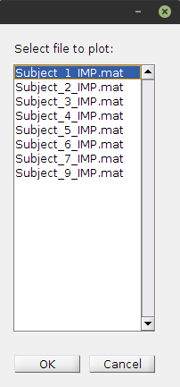
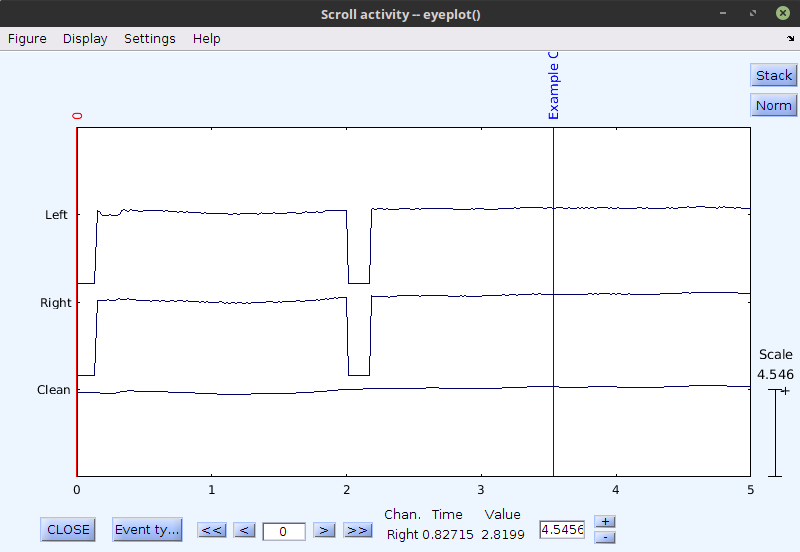

This Preprocess Menu option allows the user to plot a single subject's raw data record.
The code used to achieve this is almost entirely the work of the authors of EEGLAB. In fact the author of PupilPlot fears he may have mangled perfectly good code to get it to do what he wanted and apologizes to the creators of EEGLAB for what he did to their creation. References
With that in mind, when a user selects from the Preprocess Menu > View Raw Data, PupilPlot presents the user with a list dialouge that allows the user to select one of the subject files from the working import directory.
Example of Subject List select:

After Selecting one subject's data to plot PupilPlot calls EEGLAB functions that will plot the raw continuous data, like so:

If the data has already been preproccesed like the example above, the cleaned interoplated pupil data will also be plotted.
The sole functionality of this Preprocess Menu option is to view the raw data of a single subject and aid in defining trigger/annotation events in relation to the data.
Return to Preproccessing Menu or PupilPlot